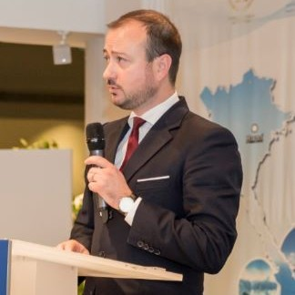
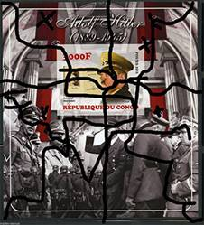

Illegal Stamps seen by UPU
The philatelic interview of the decade with the UPU
With Mr. Benjamin Combes
Philately and International Reply Coupons (IRCs) Programme Manager, February 2024
The questions were asked by Victor Manta, philatelic journalist, PWO president
1. PWO. When did you assume the role of Philately and CRIs Programme Manager at the UPU International Bureau? How did you find this transition?
I took up the role of Philately and IRCs Programme Manager on 13 November 2022, succeeding Ms Olfa Mokkadem of La Poste Tunisienne.
Following on from over five years within the Director's Cabinet and the Communication and Institutional Relations Department at Philaposte – the philatelic division of La Poste France, leading printer of postage marks in Europe and a major player in the philatelic market – the transition was entirely natural for me. I have more than 25 years – of which more than 20 in the postal industry – of managerial experience in information technology, complex project management, logistics, institutional and international relations, and philately. Therefore, becoming part of the team at the International Bureau was an opportunity for me to apply all of my managerial and multidisciplinary capabilities within a single role.
2. PWO. The link below reveals that the UPU issued one circular on illegal postal stamps in 2023 and another such circular in 2022. Do you think that two circulars is sufficient to cover illegal stamp issues over this period of time?
https://www.upu.int/en/Universal-Postal-Union/Activities/Philately-IRCs/Philatelic-circularsThe publication of this type of circular is necessary and serves to raise everyone's awareness of the illegal and abusive nature of certain stamp issues, bringing our work to the attention of the public at large. While a helpful tool, circulars alone are not sufficient to raise awareness, which is why we are still using other methods of communicating with members and other stakeholders on this issue.
Today, we are taking a slightly different approach and prefer to concentrate, in collaboration with designated operators, on more concrete oversight measures that are based on exchange, discussion and education of all stakeholders. This is a crucial factor in getting our partner operators, customs authorities and philatelists on board... helping the operators that notify us of such issues to achieve better management and better control over these products flooding the philatelic markets.
3. PWO. Would you say that the number of illegal issues has increased or decreased in recent years? What are your means of defence to combat illegal issues?
Wrongdoers have realized that, nowadays, stamp fraud is easier and less risky than robbing banks. As a result, forgery, counterfeiting and the replication of illegal stamp issues have become more common. Our means of defence? Education and communication to ensure the vigilance of consumers and collectors. And certain tools that we aim to make available to them for more effective detection.
The greatest problem would be to underestimate or dismiss illegal issues, or to fall into the trap of thinking that repeated communication on the subject is sufficient. It is through joint action, encompassing not only the aforementioned circulars but also effective tools and greater collective awareness, that we will be able to combat this problem in an effective way.
4. PWO. The WNS – a numbering system launched by the World Association for the Development of Philately (WADP) in 2002 and managed by the UPU – should have reduced the number of illegal issues entering the philatelic market. Have the UPU and WADP succeeded in this approach and has the number of illegal issues indeed been reduced?
The WNS is a powerful tool. Based on an original and highly pragmatic concept, its primary function and use have been underestimated for far too long, in my opinion.
Admittedly, it is a relatively “young” database, set against the history of postal stamps and looking back to the Penny Black. But it is worth taking the time to explain what the WNS has to offer. Today, the WNS is the only publicly available global philatelic database offering exhaustive data provided exclusively by the designated operators that own the stamps in question. And the UPU is its guarantor.
Unlike many sites promising hundreds of thousands – or even millions – of records, none of the information contained in the WNS originates from collectors, associations or the secondary market. None of the visuals included in the WNS come from stamps that have been exchanged or previously circulated. The information contained in the database is provided directly by the stamp issuers themselves, making it a truly reliable and trusted source of information.
We, the UPU, serve as the unconditional guarantor of the exhaustiveness of the data comprising the WNS. We make this data available to all, so that everyone is in a position to accurately gauge the veracity of the information and products that they encounter.

5. PWO. We have found that, despite the timid efforts of the UPU and the WADP, there are too many new illegal issues invading the market. Should the UPU not collaborate with INTERPOL, with which it signed a memorandum of cooperation in 1997, and denounce the producers and sellers of such stamps?
That is one way of looking at things, certainly. However, I think that we can work just as effectively with our customs partners by pursuing our current course, involving all of the UPU bodies and thus benefiting from the expertise of our security and customs working groups, which comprise experts from operators and from all of the relevant government bodies.
6. PWO. We do not think that the representatives of developing countries – the principal victims of illegal issues – are able to combat illegal issues without the UPU's help. Will the UPU provide help to these countries in the near future? If so, how?
Without wishing to paraphrase, the UPU is the main forum for cooperation between postal sector players, helping to maintain a truly universal network of cutting-edge products and services.
The organization fulfils an advisory, mediation and liaison role, providing technical assistance where needed. The UPU sets the rules for international mail exchanges and makes recommendations to stimulate growth in letter post, parcels and financial services, and to improve quality of service for customers.
To this end, the UPU provides support to all member countries to ensure a fully developed postal system that safely and effectively serves all people. We will continue to serve all our member countries, regardless of whether an issue concerns most countries or just one, because the more we share, the more we receive. We share our expertise, our experience and our passion, in order to serve every one of our member countries, at their own pace. The WNS is there for everyone.
7. PWO. Some countries – generally those with low income – contract legally with private agents for the issue of huge numbers of different stamps, which are known as “abusive issues”. It is not uncommon for small countries to issue 500 different stamps within a year. Most of these stamps are not listed in the WNS, but this does not mean that they are illegal. Does the UPU take or intend to take effective measures to limit the number of such stamps, which are highly detrimental to the philatelic market? If so, how?
Once again, I have faith in dialogue and collaboration. And, evidently, so do the designated operators. At the philatelic conference held by the Pan African Postal Union (PAPU) in Rabat (Morocco) in late 2023 – featuring remarkable support from Poste Maroc, which is spearheading an extremely positive dynamic in Africa – the level of attendance was record-breaking. More than 35 countries were present, represented by their philatelic managers, which enabled us to address these very subjects.
The WADP takes the matter of these controversial stamp issues very seriously. We provide support, in the form of expertise, availability and advice, to all of the countries concerned, in some cases individually, to help them to terminate the abusive contracts that they have been obliged to sign. Two such cases involving countries (which I won't name for reasons of confidentiality) were discussed and led to significant advances at this same PAPU conference..
In the interests of opening up to the wider postal sector and the general public, the WADP has started to reference and certify various partners – both postal and private – in all sectors relating to philately, so that these entities can better guide their own partners in accordance with the philatelic code of conduct applied by UPU member countries, as published in Istanbul Congress recommendation C 13/2016.
8. PWO. Can the UPU assist philatelists in ascertaining whether specific stamps are illegal, if those stamps are not mentioned in the circulars? Where and how should philatelists apply to obtain such information?
The UPU is working on solutions that it intends to make available to operators in the near future, in order to assist in securing their philatelic ecosystems. The WNS is one such tool. It is through information, education and the vigilance of all stakeholders that, together, the UPU and operators will succeed in providing philatelists with simple and effective means to avoid abusive issues.
9. PWO. How can the PWO, and collectors in general, help the UPU more effectively in its fight against illegal and abusive issues?
Over the years, collectors and stakeholders in the secondary philatelic market have created an extraordinary network. In parallel, the UPU has undertaken initiatives to highlight illegal and abusive issues.
Nevertheless, the problem persists and counterfeiting continues. History indicates that it is not enough to simply focus on shutting down the supply at its source. Today, it is essential that we apply pressure in relation to wrongdoers' motivation; only through our collective disdain for such products, resulting in a significant reduction in the profitability of counterfeit stamps, will wrongdoers cease to target philately for their crimes. Therefore, by continuing to work together to identify illegal and abusive issues, we can ensure that the profitability of counterfeiting stamps is reduced to zero.
10. PWO. Which members of the UPU International Bureau staff are directly responsible for this activity and how do they collaborate with stamp collectors worldwide?
This is not the work of a single staff member or just one department; it is a shared effort by all UPU staff at all levels, relating to customs, operations, innovation, philately and more. Everyone has their role to play.
The WADP and the programme that I manage increasingly serve in a facilitation role, taking the time necessary to interact with each stakeholder in the various philatelic ecosystems and with each operator. It is through dialogue and cooperation that we will effect change.
UPU's new policy on illegal stamps
For over 25 years, producers and sellers of illegal stamps have flooded the global philatelic markets with their products that imitate those offered in the name of legitimate postal administrations, usurping their names and sometimes national symbols. As a result, many naive collectors fall prey to these clever and sneaky producers and buy, sometimes at considerable prices, imitations of real stamps.
Often only after many years do they realize that they have been tricked and they blame not their naivety and lack of information, but also the world of philately in general, which did not help them realize early enough their mistakes.
Unfortunately, the International Federation of Philately (FIP), the main representative of stamp collectors, preferred to ignore this danger brought to philately, because its members, much more educated in the matter, are not directly affected by this worldwide scourge. It preferred not to "get her hands dirty" with this problem, practically ignoring the basis of world philately, the beginner collectors.
It was the Universal Postal Union (UPU), an old and reputable organization that regulates world postal traffic, that was alerted to the danger, thanks to the complaints of some concerned collectors. Its first measure was to publish the so-called Circulars of the postal administrations that denounced illegal stamps issued in their name, but without their consent, and asked the UPU members not to recognize them. As long as the UPU was actively involved in issuing these Circulars, their number was rather large and they could represent a valid reference in recognizing and combating a number of illegal stamps. Unfortunately, this involvement has dropped to almost zero in the last years...
A second measure of the UPU was the creation and implementation of the WNS database of legal stamps issued by the member countries of the UPU, with the result that it would represent a benchmark for collectors from all countries of the world for the recognition of legal stamps, and therefore the elimination of other products. Unfortunately, this action, very expensive, failed miserably, because the WNS was and remained very incomplete and because, essentially, precisely the stamps issued by developing countries, the main victim of illegal emissions, or lack thereof, were not published in the WNS.
From the answer of the interview with Mr. B. Combes, the main official responsible for world philately at the UPU, we learn that practically the UPU gave up its only weapon in the fight against illegals, namely the Circulars, replacing it with "...collaboration with designated operators, on more concrete oversight measures that are based on exchange, discussion and education of all stakeholders." (answer to question no. 2). It is an unspecified measure, lacking the transparency of the Circulars and therefore one that escapes any critical evaluation.
The recent reinvigoration of the WNS, whatever its merits, does not represent a valid solution in the fight against illegal stamps, as we have shown above, and this despite the new efforts of the UPU to improve it.
Mr. Combes rejected our suggestion expressed in point 5, stating that: "However, I think that we can work just as effectively with our customs partners by pursuing our current course... ". We allow ourselves, with all due respect, to specify that the "current course" did NOT prevent the proliferation of illegal stamps and that, as in the case of those who counterfeit banknotes, only radical measures can become effective, this considering the maximum profits achievable with minimal eforts, lacking any risky elements.
Mr. Combes refrained from telling us the extent and financial value of the losses suffered by the postal administrations due to the unfair competition of illegal stamps. The reason is not known to us, but it could be the UPU's ignorance of the losses involved as well as of those who cause these losses.
This may also be the reason why the UPU is not able to start an action through INTERPOL, another reason being that the UPU considers only the responsibility of the countries to defend their interests, and not its own.
PWO will continue, with its modest means, through the collaboration with its members, as well as the organizations and collectors who are concerned with the problem, to fight against illegal and excessive stamps.
Link to the UPU Historian Colloquium "Safeguarding the added value of postage stamps...", presented by Maria Libera. Chair: Combes, Benjamin, UPU


|